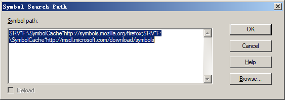

分析dump之前，需要先从微软符号服务器下载分析所需的pdb。打开Windbg，选择File->Symbol File Path，在弹出的符号路径设置窗口中输入以下内容并点击OK，也可以使用.sympath+命令（需要先打开dump）：
1 | SRV*F:\SymbolCache*http://symbols.mozilla.org/firefox;SRV*F:\SymbolCache*http://msdl.microsoft.com/download/symbols; |
其中，F:\SymbolCache替换为要存放pdb的路径，这里也可以预先在后面加上项目的pdb所在路径。

通过
File->Open Crash Dump打开dump文件，添加项目的符号路径（.sympath+命令或File-> Symbol File Path，如果已经预先添加过了则忽略），之后输入.reload /f强制重新加载符号，如果之前没有下载过符号，则需要等待比较长的时间。1 | 0:004> .reload /f |
当出现Loading unloaded module list时，输入.chain命令查看当前已加载的扩展：
1 | 0:004> .chain |
可以看到这里已经加载了sos.dll，如果遇到没有sos.dll的情况，可以输入.load C:\Windows\Microsoft.NET\Framework64\v4.0.30319\sos.dll加载dll。加载之前请先确认SOS 调试扩展 (sos.dll) 的版本与 CLR 和 DAC 的版本匹配: v4.0.30319，以及三个组件都是64位（这一句来自微软官方文档，我也不太明白是啥意思）。另外也可以输入.loadby sos clr（CLR版本4.0及以上，1.0或2.0版本输入.loadby sos mscorwks）加载sos.dll。
接下来，输入!clrstack即可看到托管堆栈信息：
1 | 0:004> !clrstack |
输入!clrstack -a还可以看到调用堆栈传入参数信息：
1 | 0:004> !clrstack -a |